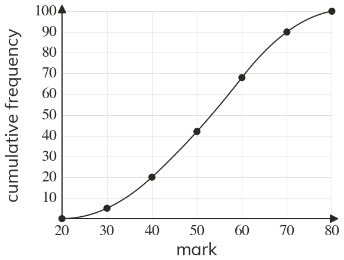

Westonbirt Maths · Averages, Quartiles and Cumulative Frequency
Finding Key Values from a Cumulative Frequency Graph
Name: ______________________ Date: ____________
1
Use the graph of test marks to estimate the median mark.
2
Estimate the lower and upper quartiles.
3
Estimate the interquartile range.
4
Mia says that the interquartile range is
Explain her mistake.
Explain her mistake.
5
Estimate the mark that students scored at most.
Ext
The top of students win a prize. Estimate the lowest mark that wins a prize.
